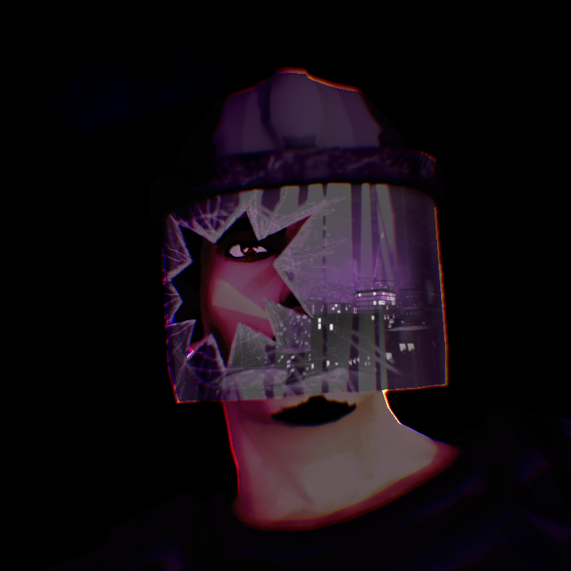
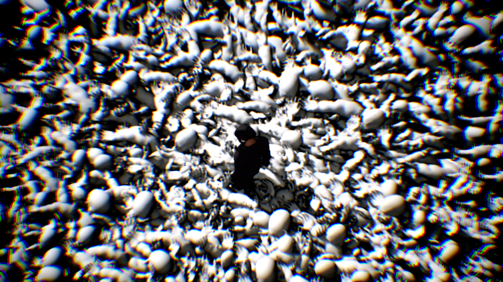

Blood on a Bird's Foot 새발의피 (codirector, cowriter, lead programmer)
Blood on a Bird's Foot is a short film animated using Blender and Unreal Engine in collaboration with 8k Productions.


For Blood on a Bird's Foot, I explored social injustice in South Korea through a fictional story that focuses on one riot police officer during a war. I experimented with unique animation styles, blending cel shading with painting-like texture overlays. For larger shots I developed a procedural city generation algorithm and built simulations for the riot scenes.
Stylized Comic Book Look

Blood on a Bird's Foot deals with intense social topics such as nuclear war and police brutality. As lead tech artist, I was faced with the challenge of creating stylized visuals that fit the tone and themes of the film. I settled on a mix of cel shading and a high-contrast monotone color scheme. Using the custom depth pass, I isolated organic components like skin, hair, and eyes, and applied cel shading and a custom LUT. This separated the main character from the background, emphasizing the themes of isolation. The environment visuals were fine-tuned with a combination of chromatic aberration, bloom, and fog. Together these elements provided a comic book-esque visual that set an atmosphere consistent with the serious subject matter.
